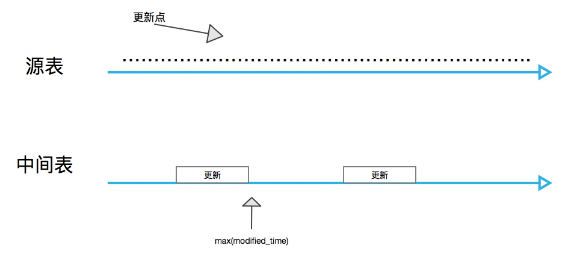
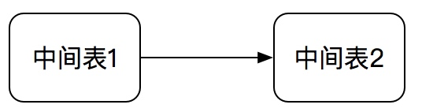
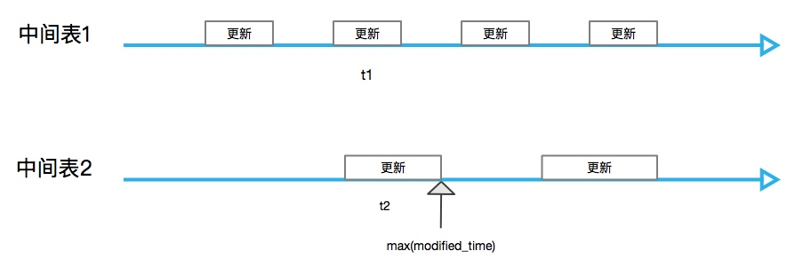

ETL中常常面临增量清洗的问题， 因为每次都全量清洗数据往往是不必要且浪费资源浪费时间的。
增量清洗往往需要依赖于某个字段用于标识数据是否为增量数据(更新或者插入), 例如时间modified_time, 如果modified_time大于上次清洗的时间，那么说明数据经过了更新或者是新数据； 又例如id，这种用的比较少，id只能标识数据是新增的，但一般情况下， 使用id获取数据(从数据库)会有更好的性能.
这篇文章讨论了使用modified_time作为增量标识字段的情况下如何获取增量数据.
以上情况皆为离线计算的情况。
情况一 : 从业务表清洗数据
业务表可能是准实时更新(例如mysql从库)或者定时更新的，
1.在业务表准实时更新的情况下， 情况是这样的

max(modified_time)指中间表的最大更新时间；
因为中间表在更新的时候业务表也会更新， 所以会出现max(modified_time)之前的一部分数据没有处理到， 因此在下一次增量的时候，需要在max(modified_time)的基础之上， 减去一段时间t,t >= 任务运行的时间, 这样的话基本上可以保证能够捕获到所有的增量了。
实时更新也可能会有一些异常情况，例如同步延迟很高，又或者两个主库从库的时间不一致，这样还会出现一些时间差，这种情况下加大t是一种缓解问题的办法.
如果每次都是全量的清洗， 那么没有这个问题.
情况二: 从中间表清洗
这种情况发生在数据仓库存在分层的情况下， 上层的中间表依赖于下层的中间表,示意图如下：

由于可能存在多个任务都依赖于中间表1 ， 所以的话 表1到表2并不总是顺序的， 示意图如下：

其实仔细观察之后可以发现，这个模型和从实时业务表中清洗的模型差别不大，只不过是中间表1的更新时间拉长了， 这种情况下如何获取中间表1的增量呢?
稳妥一点的办法是和上面的一样， 减去一段时间，但是究竟这个时间段取多大呢？
保险的话取t1 + t2, 一般的话 t2应该就可以了， 为什么取t1 + t2呢？ 理论上来说 t2 之前的更新上一次已经处理了， 但是这不一定，取决于表1的处理逻辑。所以的话要看具体情况.
总结
虽然是做数据仓库这一块， 平时总结的还是有点少了